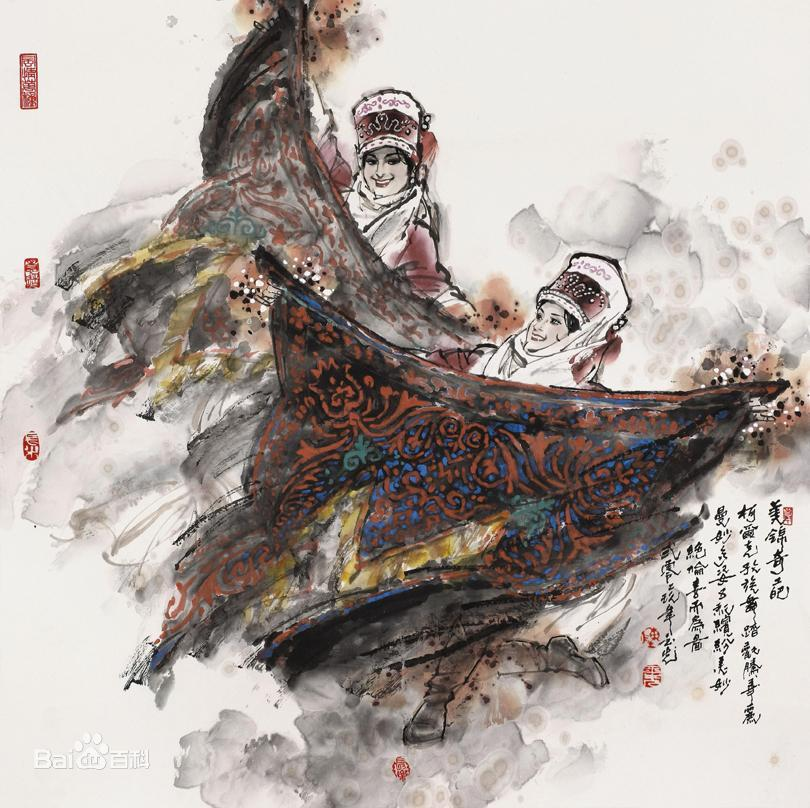

- 民族简介
- 文化习俗
- 历史发展
- 旅游介绍
柯尔克孜族
柯尔克孜族，国外同源民族汉译称作吉尔吉斯族，民族语言为柯尔克孜语，属阿尔泰语系突厥语族东匈语支克普恰克语组。 柯尔克孜族主要分布在吉尔吉斯斯坦以及中国新疆维吾尔自治区等地，在黑龙江省富裕县五家子屯也有数百人聚居，是18世纪从新疆迁去的。 柯尔克孜族是吉尔吉斯斯坦的主体民族，占其总人口的69.2%，根据2010年第六次全国人口普查统计，中国境内的柯尔克孜族人口数为186708人。
信仰
信仰 柯尔克孜族最早信仰萨满教，居住在黑龙江富裕县的柯尔克孜人至今仍信仰该教。新疆塔城、额敏县的柯尔克孜人信藏传佛教。但大多数柯尔克孜人信仰伊斯兰教，又有原始信仰的残余。 信仰库特，是柯尔克孜族原始宗教信仰遗留之一。库特，柯尔克孜语是幻想中的吉祥物的意思。柯尔克孜人认为，库特能带来如意吉祥，只有胸怀坦荡、心地善良的人才能得到它。加达塔什是柯尔克孜族求雨用的祭器，人们认为它具有魔力，可以求得雨水，一旦久旱不雨，有些人便手拿求雨石求雨。祈雨仪式简单，即将魔石放入水碗之中，搅动碗中的水以求雨。护身符为消灾辟邪特意缝制的小布包，多为三角形，内装毛拉或圣哲书写的经文或咒语，须随身携带，精心爱护。柯尔克孜人的图腾崇拜源于其对动物的崇拜。古代从事游牧和狩猎的柯尔克孜人，对动物有着特殊的感情，特别对动物的力量与勇猛，十分崇拜。他们想借助动物的神力以发展自己，并求得凶猛动物的保护，视这些动物为自己的保护神，并将这些动物的图形纹在身上或绣在织物上，挂于毡房内 。
建筑
现代柯尔克孜族基本上实现了定居，但仍保留了 部分游牧民族的传统特点。 居住农村和牧区的住宅稍有区别。农区村落的庭院式住宅，砖木结构的平顶屋较多。牧区的柯尔克孜人喜用白毡盖毡房，称之为“勃孜吾依”，这与他们崇尚白色有关。牧民夏天多住在气候凉爽的高山地带的河流附近，称“夏窝子”；冬季多住在气候温暖的山谷地带，称为“冬窝子” 。
服饰
景颇族服饰风格独特。男子服饰以黑、白为主色，老 年男子服饰各支系相同，均着黑色对襟短衣和黑色宽管长裤，戴黑色包头。中、青年男子服饰，景颇支系与其他支系间存在细微差别，上身内穿白色立领衬衣、外套黑色圆领外衣，下身穿黑色长裤，头戴红蓝色相间的方格棉纱布圆筒形头巾。其他几个支系的中、青年男子，均着白色衬衣，黑色长裤，戴饰有各色绒球缨穗的白色包头。无论哪个支系的男子出行，均随身背挎筒帕（即背包）和长刀。
饮食
柯尔克孜族的饮食，以牛、羊、马、骆驼、牦牛肉和奶制品为主，几乎一日三餐都离不开肉、奶、乳制品。 小麦、青稞、蔬菜在柯尔克孜族的饮食中，只是辅助食品。 “克么孜”（马奶酒）和“勃左”（孢孜酒），都是柯尔克孜人夏秋季招待客人的上好饮饮料。
历史
柯尔克孜族的历史可以追溯到两千年前。《史记·匈奴列传》最早出现了对柯尔克孜族的先民的记载。约公元前3世纪末，匈奴征服的北方诸族中，就有“鬲昆”，《汉书》作“隔昆”，“鬲昆”或“隔昆”即柯尔克孜族的先民，“鬲昆”是当时柯尔克孜的译音。从《史记》的记载看，当时的“鬲昆”居住在匈奴以北，在今蒙古人民共和国以北的吉尔吉斯湖周围，其活动地区为阿辅水（阿巴根河）与剑水（叶尼塞河）之间。 唐代以前，柯尔克孜族主要从事游牧和渔猎。至唐代，柯尔克孜族有了很大发展，人口达数十万，其中胜兵八万。他们虽然仍以牧业为主，但农业生产已有一定程度的发展。他们能用铁制造兵器，使用十二生肖纪年，反映出古代柯尔克孜族社会经济文化在当时北方各民族中，是比较先进的。柯尔克孜语属于阿尔泰语系突厥语族。公元5、6世纪时，受突厥汗国统治，柯尔克孜族使用过古突厥文。柯尔克孜族地处匈奴西部，汉朝时被匈奴冒顿单于征服。此后又先后为鲜卑、柔然等族所统治。
清朝称柯尔克孜族为布鲁特。18世纪初，布鲁特人处于封建农 奴制阶段，以游牧畜牧业为主。“爱曼”是社会基层组织，若干“爱曼”为一鄂拓克，其首领称“比”，每一比“或有管领一二十爱曼者，或有管领二三十爱曼者”。为了反对准噶尔的掠夺，布鲁特与哈萨克、维吾尔一起进行了长期的反对准噶尔贵族奴役、掠夺的斗争。这个斗争，实际上与雍正、乾隆时期政府与准噶尔农奴主贵族的斗争东西呼应，起到了互相支持的作用。
抗日战争爆发后，柯尔克孜族人民积极参加抗日活动。许多青年参加了反帝会，牧民们为抗日前线捐献牲畜和各种物品。 1949年9月25日，柯尔克孜族人民与各族人民一道迎来了新疆和平解放。从此结束了苦难深重的历史。1954年7月14日，克孜勒苏柯尔克孜自治州宣布成立，自治州包括阿图什市、乌恰县、阿合奇县、阿克陶县。如今，克孜勒苏柯尔克孜自治州已经在共和国的史册上写下了五十多年民族自治的历史 。
柯尔克孜民族村
柯尔克孜民族村隶属于黑龙江省农垦总局齐齐哈尔分局富裕牧场。位于富裕牧场部西南6.5公里处，西靠嫩江，南面乌裕尔河，是一个具有百年历史的老村。村里建有民族风情园、柯尔克孜族东迁纪念碑、柯尔克孜民俗馆、玛纳斯史诗长廊和玛纳斯广场。通过深入挖掘柯尔克孜东迁历史、宗教信仰、民族语言，注重经济效益和社会效益并重原则，提高知名度和影响力，并入选黑龙江100个最值得去的地方。